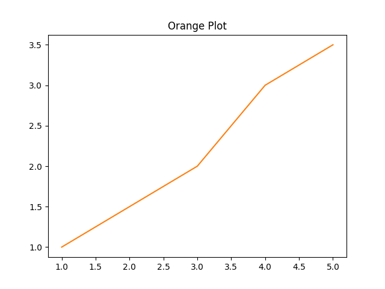

Your Main Title
Here's some info about using the template.
Site config
Make sure to set your site to build from the /docs folder on the gh-pages branch. You can do that on the settings page: Settings -> Pages -> Build & Deployment -> Branch.
mkdocs.yml
Don't forget to edit the mkdocs.yml. It has all your site config, including the table of contents at the side.
Don't forget change the site_url and repo_url, or else your site won't work.
Google site verification
If you don't need, a google-site-verification <meta> tag, be sure to remove it from <project root>/_docs_src/custom_theme/main.html.
Generating docs
There is a github workflow to generate docs. Any pushes to the main branch will trigger the build.
Writing doc pages
Put all your markdown files in _docs_src/src.
Inter-site links
You can link to other pages on your site using relative paths:
Here is a link to the Cool Stuff page!
Images
You can put images you want to display in the <project root>/_docs_src/src/img folder. Then show them like this:

Note the path is relative.
Code examples
You can do code examples with highlighting. Check it out.
let f x = x + 1
let y = f 10
You can change languages that you can highlight with the hljs_languages section in mkdocs.yml.
Page metadata
You can add some metadata to your pages using yaml blocks.
---
description: Blah blah blah
---
The file <project root>/_docs_src/custom_theme/main.html uses some of these:
description: ...for adding a description to the page (will add<meta>tags to the generated html)
If you need others, feel free to add them.
To dos
If you want to just leave a "todo", you can link to the To Do page like. It's there simply for convenience.
License
You probably want to put a license here. Here is an example...

Copyright (c) 2019 - 2022 John S. Doe.
This documentation is licensed under a Creative Commons Attribution 4.0 International License.
NOTE: This is just an example for using a creative commons license. It is not the actual license of this template.